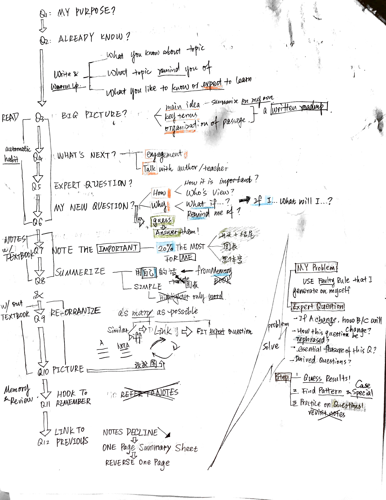
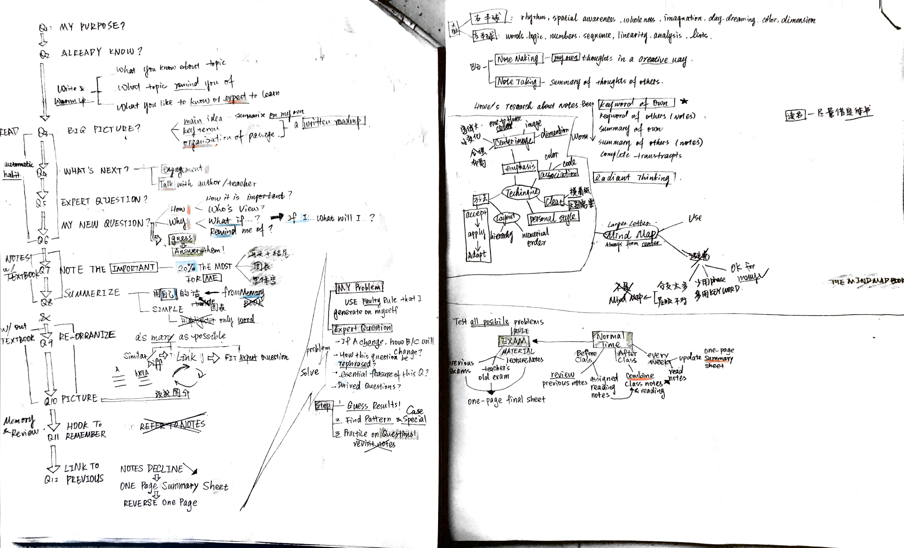
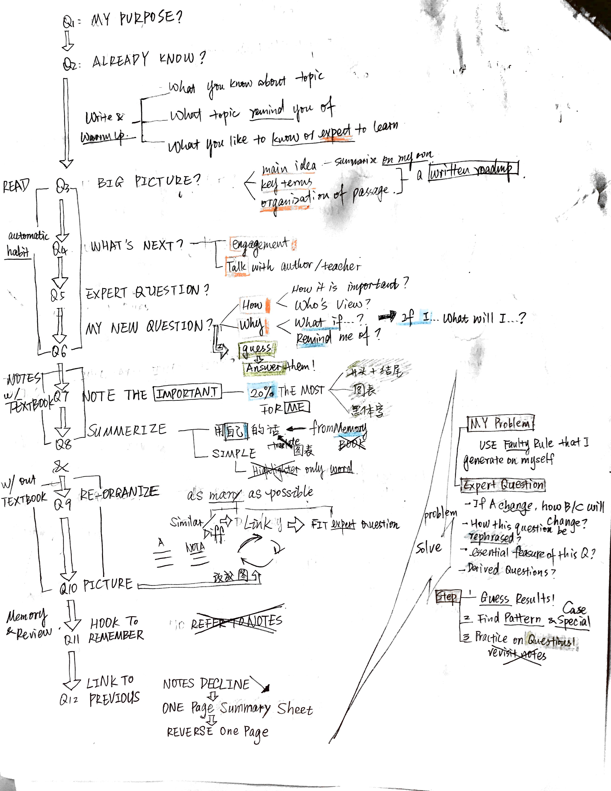
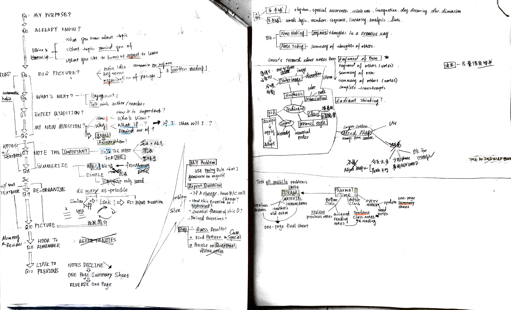

Reading Map for WHAT SMART STUDENT KNOW by Aadam Robinson & MIND MAP BOOK by Tony Buzan
To view full content, right-click on image and choose 'open image in new tab' option


To view full content, right-click on image and choose 'open image in new tab' option

